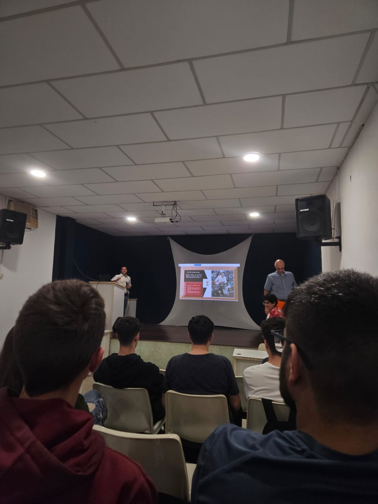

Formado em Informática para Internet, com experiência em automação predial e habilidades em resolução de problemas e trabalho sob pressão. Atualmente, curso Análise e Desenvolvimento de Sistemas na FATEC e me especializo em Full Stack Python pela EBAC, focando em desenvolvimento web. Atualizo meu GitHub com projetos de front-end, back-end e automação de testes. Tenho noções básicas de design gráfico e experiência como freelancer na criação de logomarcas e materiais visuais.
Perfil
Resumo


Formações
Resumo
Formado em Informática para Internet, com experiência em automação predial e habilidades em resolução de problemas e trabalho sob pressão. Atualmente, curso Análise e Desenvolvimento de Sistemas na FATEC e me especializo em Full Stack Python pela EBAC, focando em desenvolvimento web. Atualizo meu GitHub com projetos de front-end, back-end e automação de testes. Tenho noções básicas de design gráfico e experiência como freelancer na criação de logomarcas e materiais visuais.